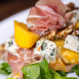
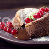

Classic French Mussels

Ingredients
- 3 pounds fresh mussels, scrubbed debearded
- 10 tablespoons (1 1/4 sticks) butter
- 3/4 cup finely chopped shallots
- 6 large garlic cloves, minced
- 4 tablespoons chopped fresh parsley
- 2 tablespoons fresh lemon juice
- 1 teaspoon grated lemon peel
Preparation
Place mussels in heavy large Dutch oven, cover and cook over high heat until mussels open, shaking pan occasionally, about 5 minutes. Drain mussels, reserving liquid. Transfer mussels to bowl; discard any that do not open. Tent bowl with foil.
Melt butter in same Dutch oven over medium-high heat. Add shallots and garlic and sauté until tender, about 3 minutes. Add 3 tablespoons parsley, lemon juice, lemon peel and reserved liquid from mussels and bring to boil. Season to taste with pepper. Drizzle garlic butter over mussels. Sprinkle with 1 tablespoon parsley.
Watercress Salad

- 1 English (European) seedless cucumber, diced
- 1 1/2 cups watercress leaves, the yield of a healthy bundle from the market
- 3 tablespoons honey
- 3 tablespoons white vinegar
- 3 tablespoons cold water
- 3 tablespoons fresh dill, finely chopped
- Coarse salt
Directions
Combine cucumbers and watercress in a large bowl. Whisk the honey, vinegar, and water together. Pour over salad and toss well to combine. Season with dill and salt and toss salad again.
Recipe courtesy of Rachael Ray.
Lava Cake

Ingredients
- Baking spray, for spraying custard cups
- 1 stick butter
- 2 ounces bittersweet chocolate
- 2 ounces semisweet chocolate
- 1 1/4 cups powdered sugar
- 2 whole eggs
- 3 egg yolks
- 1 teaspoon vanilla
- 1/2 cup all-purpose flour
- Vanilla ice cream, for serving
Preparation
Preheat the oven to 425 degrees F. Spray four custard cups with baking spray and place on a baking sheet.
Microwave the butter, bittersweet chocolate and semisweet chocolate in a large bowl on high until the butter is melted, about 1 minute. Whisk until the chocolate is also melted. Stir in the sugar until well blended. Whisk in the eggs and egg yolks, then add the vanilla. Stir in the flour. Divide the mixture among the custard cups.
Bake until the sides are firm and the centers are soft, about 13 minutes. Let stand 1 minute. Invert on individual plates while warm and serve with vanilla ice cream.
Recipe courtesy of Ree Drummond